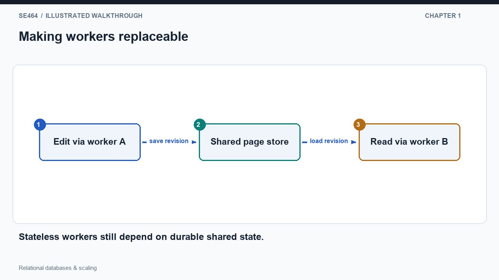
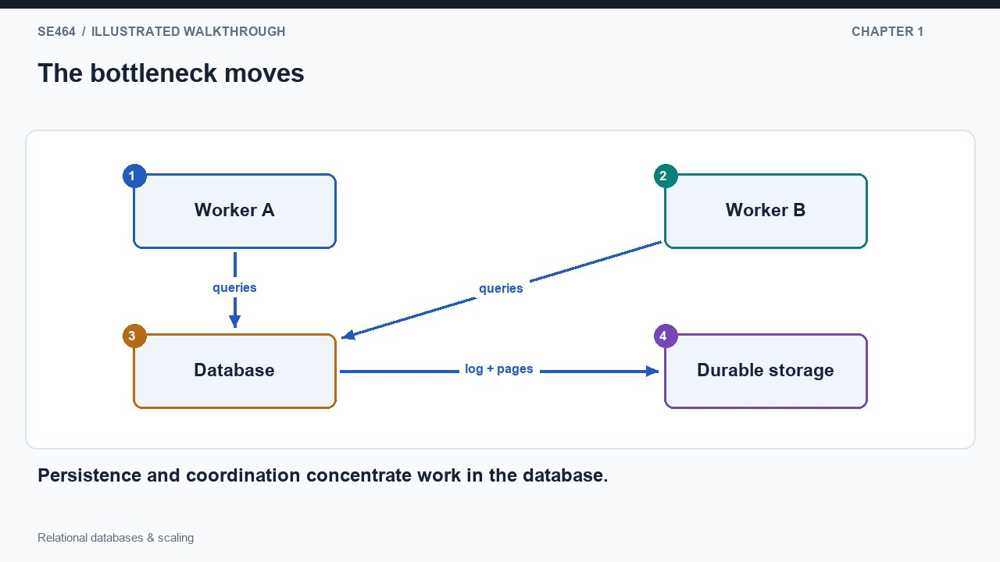
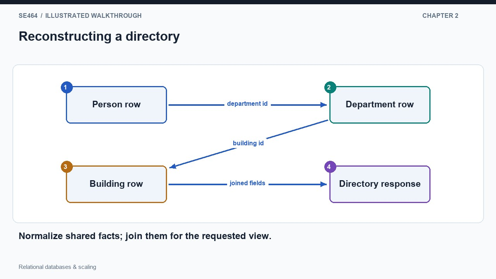
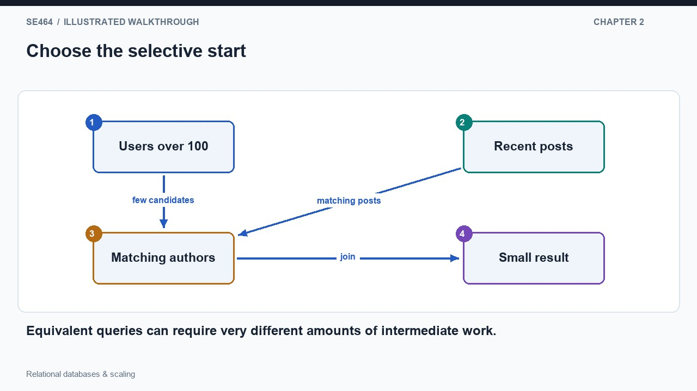
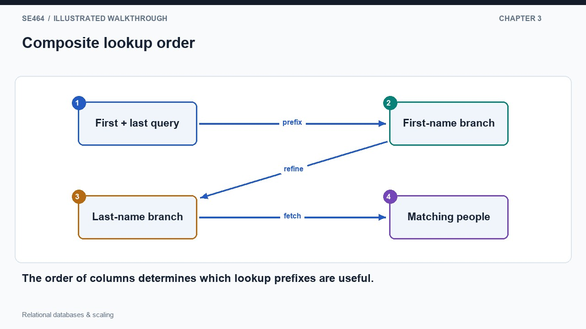
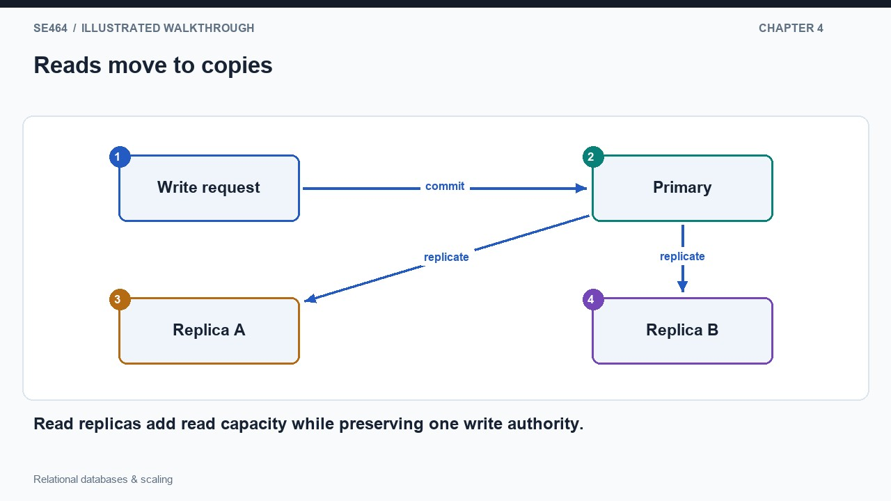
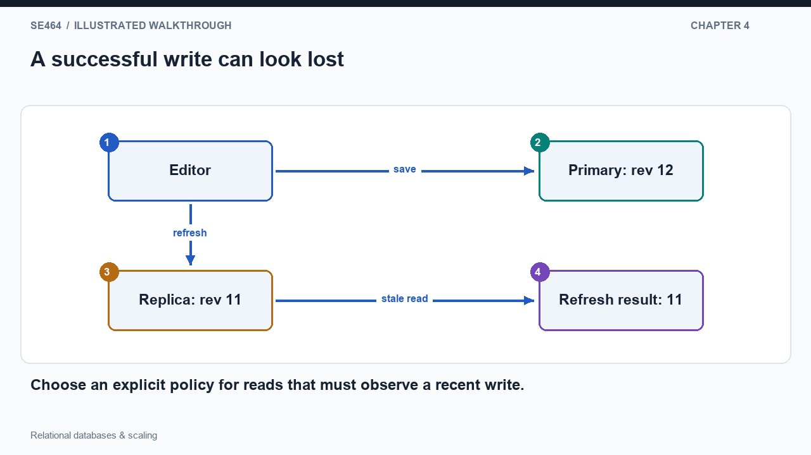
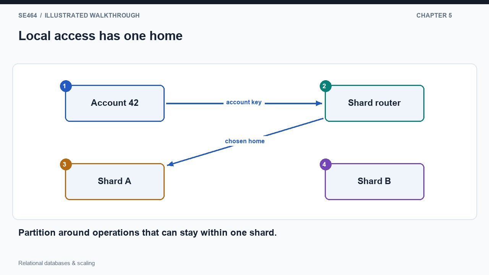
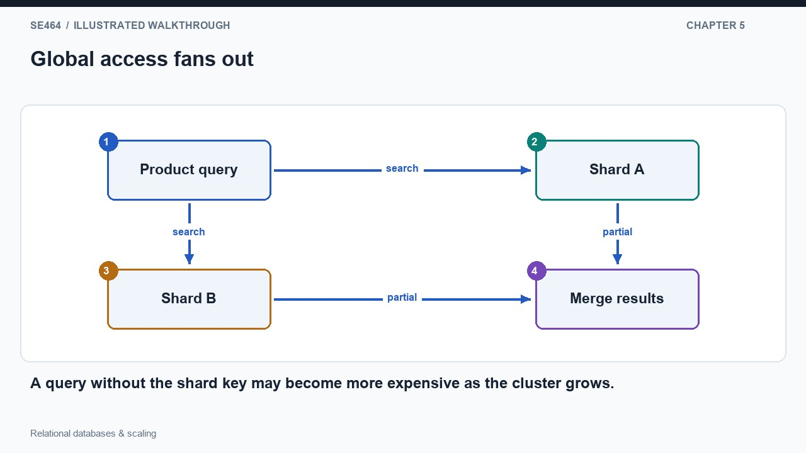

Connect storage, schemas, indexes, read replication, and sharding to the queries a service needs to execute.
Start with two application workers behind a load balancer. A visitor edits a page through worker A and then reads it through worker B. If the edit exists only in A's memory, B cannot produce the new page. Sticky routing can hide that problem until A fails, but it does not create a shared, durable record. Moving page state into a database lets either worker load the same authoritative information. The application becomes replaceable because its process lifetime no longer determines the lifetime of user data. This is why adding stateless workers is straightforward, while adding independent copies of a database is a different architectural problem.
The database now carries two responsibilities: persistence and coordination. Persistence keeps an accepted edit after the application stops. Coordination makes concurrent operations agree on shared facts, such as which page revision is current. Draw arrows from both workers into one database: the drawing explains both the benefit and the next bottleneck. Every worker can consult a common authority, but all their storage operations also converge there. A load balancer normally performs relatively little work per request; the database may locate rows, check constraints, update indexes and write durable records. Increasing the worker count therefore does not automatically increase the capacity of the whole system.
Storage hierarchy explains why this concentration matters. Registers and memory are fast but limited and normally volatile; persistent storage supplies capacity at higher access cost. The useful objective is not simply to buy enough disk space, but to keep frequently used data and indexes in memory and avoid unnecessary transfers. A database manages much of that movement while exposing queries instead of raw file offsets. Files can preserve bytes, but implementing multiple indexes and safe concurrent updates on top of files recreates database responsibilities. Before scaling, distinguish capacity, request throughput, durability and coordination: a system can have ample storage capacity while still being unable to complete its peak workload quickly.


No. All copies may still wait on the same overloaded database or storage path.
Consider a staff directory containing people, departments and buildings. Each person refers to one department, and each department refers to its building. Keeping the building address in one row means an address correction has one authoritative destination. A person can also have an arbitrary number of positions without inventing position1, position2 and position3 columns: store positions as separate rows connected by identifiers. These references are the reason a normalized schema uses several tables. The final page may look like one object, but its facts have different owners and different repetition patterns. A join reconstructs the view that a particular screen needs from those separately maintained facts.
Follow the arrows in a directory query: select the person, locate the department using the referenced identifier, and then find the building. SQL describes the desired result rather than requiring the application to prescribe every lookup. The database chooses an execution plan. Suppose a different query asks for recent posts written by users over a hundred years old. Starting with the tiny set of qualifying users can avoid inspecting a large fraction of recent posts; starting with recent posts can produce much more intermediate work. Both plans can return the same answer. Their cost depends on selectivity, available indexes and the actual distribution of data, not merely on the number of tables named.
Inspect an execution plan when a query is slow. Ask which table is scanned first, how many rows are expected at each stage, and whether a lookup can use an index. Keep filtering and aggregation near storage when possible: transferring millions of rows to an application to compute a single count wastes bandwidth and application memory. Normalization is not a promise that every query is cheap, and denormalization is not proof that a schema is better. The architectural decision is where the work happens and which updates remain easy to keep correct. Preserve a clear source of truth, then introduce a derived view only for a measured access pattern that justifies its maintenance cost.


With the shown normalized schema, one department row changes; staff references retain the same department identifier.
A product catalog can be ordered by price, but that arrangement does not also order it by manufacturer or product name. Scanning the entire catalog for each alternative lookup wastes work. An index supplies a separate search structure containing values and references to the corresponding rows. The printed-catalog analogy is useful: the products need not move when a reader switches from a manufacturer index to a name index. A database goes further because its indexes must support insertions and deletions during operation. Balanced tree structures can preserve efficient lookup without rewriting half the data to make room for every new entry in a physically sorted list.
Now consider a directory query for a particular first name and last name. Two independent indexes can locate either set of matches, but the database may still need to filter or combine those sets. A composite index on first name followed by last name organizes the pair together. Its ordering also explains a limitation: it can support lookups beginning with the first-name component, while a last-name-only lookup generally cannot use that prefix in the same direct way. Index design follows actual query predicates and ordering requirements. The diagram should show the query entering a small search structure and then following a pointer to selected rows, rather than pretending that every row is read.
An index is stored data that must remain consistent with the table. Adding a row can require changes to the table and several separate search structures; changing an indexed value requires removing its old entry and creating the new one. More indexes consume memory and storage and can make writes slower. Therefore, indexing every column as a precaution can damage the workload that matters most. Start with representative slow queries, inspect their execution plans, and compare latency and write cost before and after a candidate index. A primary key identifies rows and enforces uniqueness; a foreign key expresses a reference; an index accelerates an access path. These concepts interact, but they are not interchangeable names for the same guarantee.

No. It can increase write maintenance and storage cost without helping the queries that dominate the workload.
Assume a publishing application receives thousands of reads for each edit. Sending all operations to one database makes the read workload compete with the much smaller write workload. A primary with read replicas separates them: the primary accepts changes and streams them to additional copies, while ordinary reads can use those copies. The replicas are not independent authorities allowed to invent conflicting versions. They reproduce the primary's history. This gives the system more places to execute read queries without requiring every write to be decided jointly by all application workers. It also reveals the limit: each replica still needs to process the stream of changes, so replication does not divide the primary's write workload.
Walk through an edit followed immediately by a refresh. The primary has revision 12, while one replica still has revision 11. A read routed to that replica can return an apparently lost edit even though the write succeeded. The replica may be internally consistent with an earlier point in the primary's history, yet it is stale relative to this user's action. Possible policies include reading recent writes from the primary or waiting until a replica reaches a required replication position. Those policies have latency and availability costs. A label saying read replica is incomplete unless the design also explains which reads may tolerate lag and what the user sees when lag grows.
Replicas can contribute to recovery, but read scaling and safe failover are different responsibilities. Promoting a lagging replica can lose changes that were acknowledged only on the old primary. Allowing both old and new primaries to accept writes can create divergent histories. A credible failover design therefore specifies failure detection, fencing, promotion criteria and client reconnection. Monitor replication lag alongside request latency and resource use; otherwise successful but stale reads can look healthy. For a read-heavy service, query improvements, additional memory and replicas may be sufficient for substantial growth. Move to partitioning when the write or storage workload requires division, rather than treating it as an automatic next step after adding a replica.


Only if its consistency policy ensures it has the required write; otherwise use an appropriate primary or session-aware read.
Replication puts copies of the same data on several machines. Sharding instead assigns different rows to different homes, allowing independent writes to proceed on different machines. For a service organized around accounts, an account identifier can determine the shard holding that account's records. A request with that identifier can be routed directly to its destination. The important property is bounded participation: adding more shards should not force an ordinary account request to involve more machines. Co-locating related rows can also keep transactions and joins within one shard. This is why choosing a shard key is a decision about the application's operations, not merely a way to divide a large table into equal pieces.
Now change the question from one account's orders to all orders containing a particular product. If rows are partitioned by account, the product identifier does not identify a single destination. The application may ask every shard, combine results and sort or aggregate them. That scatter-and-gather query grows more expensive as shards are added and can wait for the slowest participating shard. Dividing data can therefore improve one access path while making another harder. The diagram needs both paths: a direct arrow from account key to one shard and a branching arrow from a global query to all shards. A secondary read model may improve the global query, but it creates additional data to maintain.
Balanced row counts also do not guarantee balanced load. One large tenant or popular account can dominate a shard while others remain idle. Measure bytes, operation rate, expensive queries and key popularity, then consider finer partitioning or special handling for hot tenants. Resharding needs a migration protocol that routes reads and writes correctly while ownership changes; changing a modulo divisor is not itself that protocol. Evaluate failure boundaries and transaction scope as well as capacity. A useful design exercise is to list the five most common operations, annotate the shard key available to each, and count participating shards. If the dominant operation touches every shard, more machines may add coordination overhead rather than useful scalable capacity.


No. Each feed may still contact every shard, and the coordinator must merge results; skew and network cost can also grow.
SSN index targets that equality directly. A B-tree composite index generally favors its leading firstName column; lastName-only efficiency depends on optimizer and data.
The write is on the primary while an asynchronous read replica may still hold the older version. Use a suitable primary/session-consistent read policy.
Balanced equal-cost model: 8×200/2 = 800 requests/s. Fan-out to all 8 gives 200 requests/s; network, skew and coordination can lower both.
A social feed shards data by user ID. Compare fetching one user’s posts with fetching the latest ten posts from all their friends. Explain the role of indexes and read replicas.
A user’s own posts can be located in one shard and filtered with a suitable index. Friends may span many shards, requiring parallel queries and a merge of candidate results. The shard key trades locality against balance. Read replicas share read load but may lag and do not inherently distribute writes or increase per-replica data capacity.
Questions-only worksheet · Worked answer sheet
A repair shop records equipment readings in a relational table. A proposed status index reduces one hourly diagnostic query from eight seconds to one second, but tests show every insert takes 0.4 milliseconds longer. The system receives 2,000 inserts per second, and its write path is already near saturation. The diagnostic query has a thirty-second deadline. Which next step best fits these requirements?
Best answer: A.
Keep the index out of the saturated production write path for now and evaluate a separate analytical copy or another measured query improvement. The existing eight-second query already meets its thirty-second deadline, while 2,000 inserts each adding 0.4 milliseconds require 800 milliseconds of additional aggregate insert work per second. That is not automatically eighty percentage points of CPU utilization, because the delay may include other resources, but it is material write-path overhead. Reassess if diagnostics become more frequent or their deadline changes.
An index is a workload trade-off, not a universally free optimization. A measured improvement to a rare query can be outweighed by maintenance on frequent writes.
A field-service database uses four equal-capacity shards, each able to process 900 requests per second. Storage occupies the same number of bytes on every shard. At peak, tenant A generates 1,200 requests per second and all other tenants together generate 600, spread evenly across the remaining three shards. Records are placed by tenant ID. Diagnose the overload and propose a migration that preserves efficient tenant queries without assuming every tenant can remain on one shard.
The tenant-A shard receives 1,200 requests per second against a 900-request limit, while each other shard receives only 200. Aggregate nominal capacity is 3,600, but spare capacity elsewhere cannot serve data owned only by A’s shard. Split A using a second key, such as equipment group, while retaining tenant-local placement for smaller tenants. Route group-specific requests directly and fan out only queries that need all of A. Migrate with explicit ownership, verification and a cutover plan; copying bytes alone does not safely move concurrent writes.
Even data size does not imply even request load. A composite placement rule can trade some tenant-wide query locality for better load distribution.
A warehouse transfer commits two changes in one primary transaction: remove twelve units from shelf A and add twelve to shelf B. A reporting service reads A from replica East and B from replica West. Each replica applies complete transactions, but East has applied this transfer and West has not. The report adds the two shelf quantities and raises a stock-loss alarm. Explain the anomaly and design a read strategy for this report.
The report combines two different transaction positions: the decrease is visible but its matching increase is not, so it invents a twelve-unit loss. No replica necessarily exposed a partial transaction. Run both reads in one consistent snapshot on a single replica, or execute the aggregate as one snapshot-consistent query. If the report must include this newly committed transfer, first require a replication progress token or use an appropriate primary read. A same-replica route alone is insufficient when separate statements can observe changing snapshots without a transaction.
Replica self-consistency does not imply consistency across a multi-request report. Snapshot selection and minimum freshness are separate requirements.